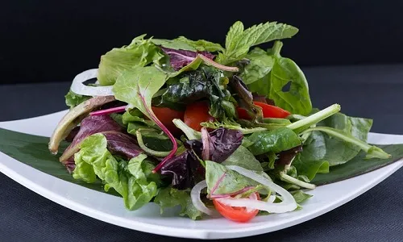

VEGETABLE SALAD
VEGETABLE_SALAD😋

Benefits of vegetable salad
Salad greens contain Vitamin A, Vitamin C, beta-carotene, calcium, folate, fiber, and phytonutrients
Steps to make vegetable salad.
- Take a large and clear glass bowl
- Try adding lightly streamed or roasted veggies like broccoli,french beans,corn,cauliflower,babycorn.
- Add lentis,beans or chickpeas or bean spruts for more proteins.
- Great some of the vegetables for a different texture.
- Add marinated veggies like artichoke hearts for tang other veggies like radish for some pungency.
- Swap in your own favorite combinaton of dried fruits,nuts and seeds.
- use fresh coriander or chives instead of parsley